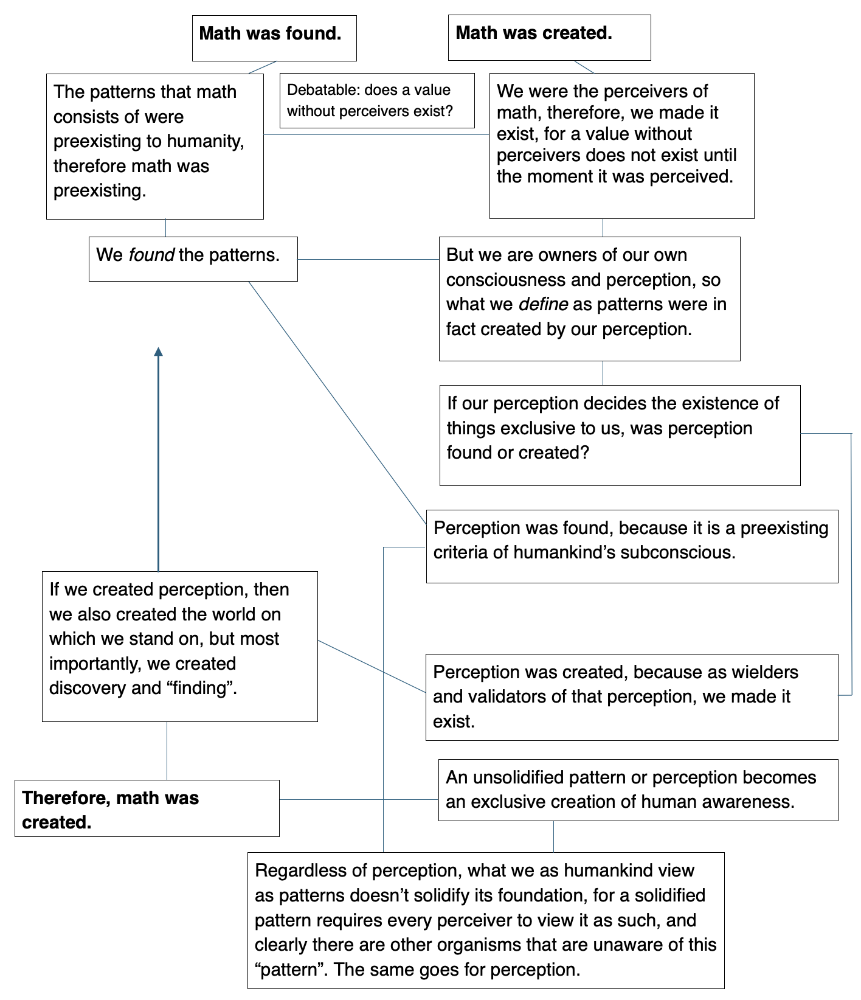
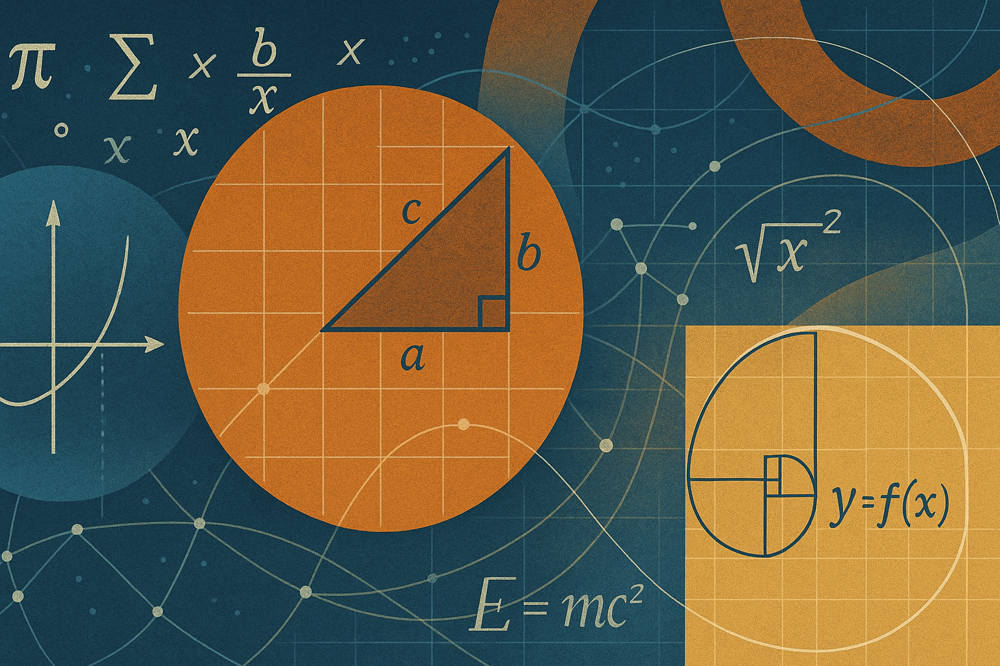
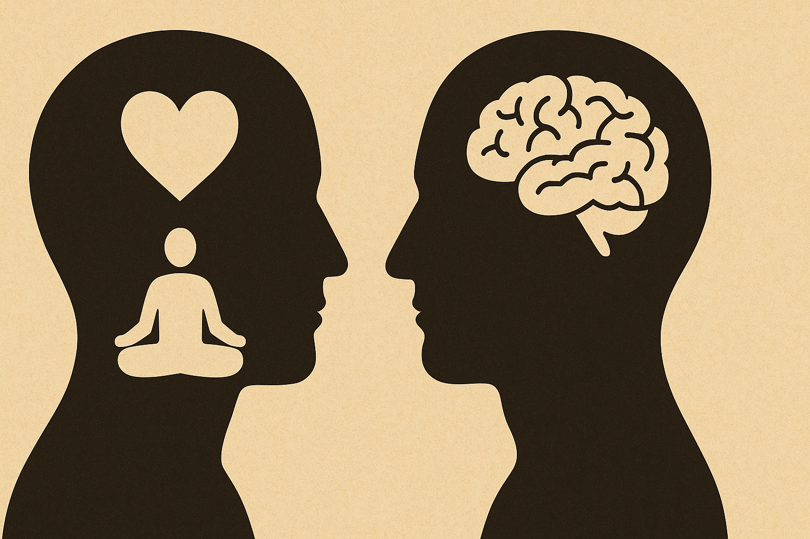
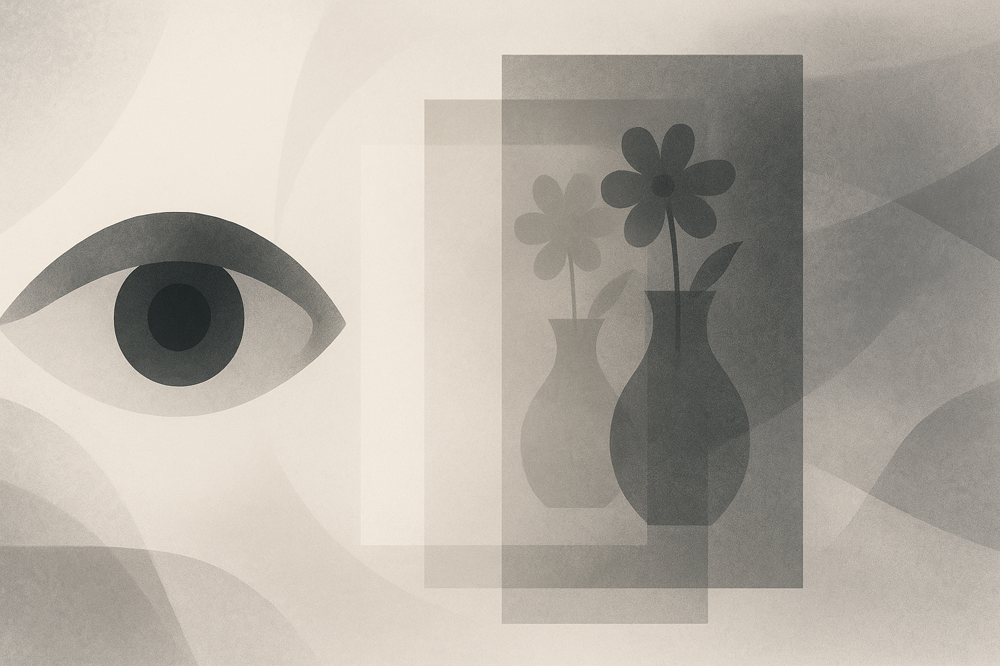
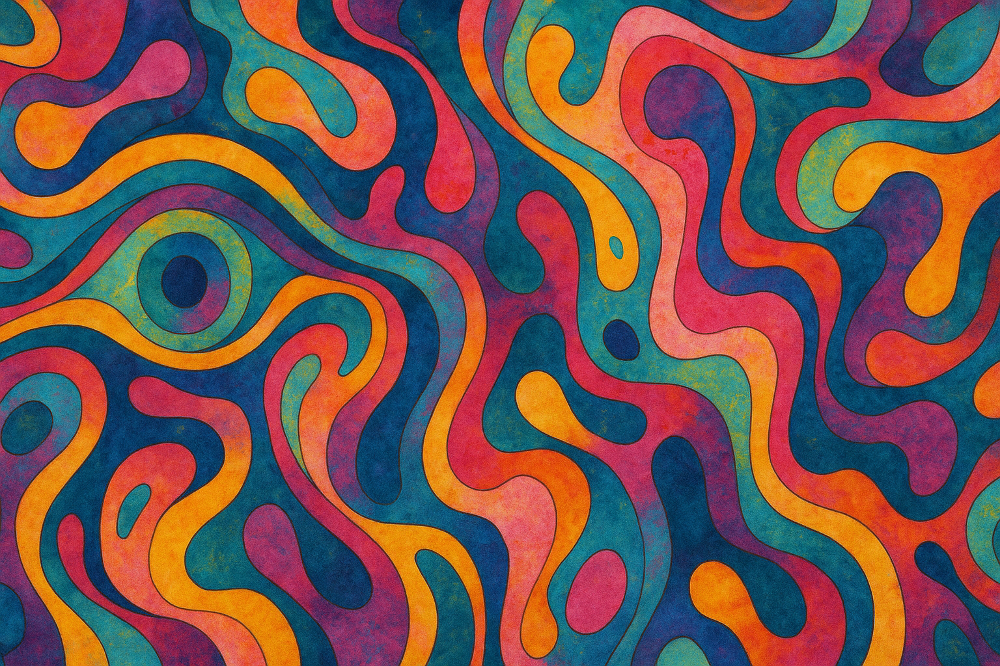

Wherever Philosophy Takes You (part 5: Conceptuality & Perception)
Conceptuality & perception: the glasses of humanity
Let's start off with something small, something seemingly unrelated, a debatable question on the smaller scale:
Was math found or created?
While the common arguments for math having been found are logical, explaining that the patterns forming the foundation of math were preexisting and merely observed by humans, and that the very root of this structural concept is timeless in the essence, I do not agree. I believe that math was created.
My reason for thinking so is because I also believe that a falling tree with no listeners did not make a noise as it fell. I believe that a value without perceivers, especially one defined by the reaction of the perceivers, is not valid. Similarly, we validated the existence of math by understanding it and putting it to use. Without validation, understanding or recognition, math would not be valid and therefore it would not be math, it would be an untouched concept—it's debatable whether it would be a concept at all. The recognition of math brought the concept to existence, for it did not exist until the moment we made it exist. If we were to take it a step further and say we created the perception of discovery, then a separate belief emerges: that a world without life does not exist, and that the moment it exists is the moment one recognizes its existence.
Here's a flow chart of my thinking:

I recognize a few unacknowledged criterions and unmined concepts in the flow chart above, but regardless, it represents my thinking: math was created, and so was our perception.

I suppose this dilemma really boils down to: Are certain perceptions exclusive to humanity? And if so, does that affect the validity, existence or scale of certain perceptual concepts?
The perceptual concepts leaning towards mental awareness are sure to be personal and tinted. For example, the belief of the existence of a soul influences how we treat and view our lives. One who believes in the ideal existence of spiritual awareness takes on a conceptually harmonized shell, living with tenacity. On the other hand, a more pragmatic person without religious or spiritual beliefs would live rationally, tentatively and sometimes intellectually invigoratingly.
To a religious person, it might seem lawless to live without awareness of inevitable consequence, to refuse to believe that kindness promises reward, and evil threatens doom. However, a person without religion might tread about kindness more tentatively, with more genuineness and soulfulness and intellectual open-mindedness. One who does not live by religious consequence might see kindness as a rewardless act of non-materialistic, emotional, well-filling exercise, while some who believe in godly effect would do good in fear of magnitude.
Meanwhile, the religious perception of evil consequence morally restrains acts of evil, which is something the legal court doesn't almost promise. That goes to show how religious perception, which is a type of mental and perceptual concept, reigns our acts of good, evil, justice and rationality.

Another form of perceptual and mental conception is forwardness. Forwardness implores whether an object that human eyes perceive is the direct projection of the original object, forming relationship to perceptual straightforwardness, or whether that perception is purely associational and is a non-direct, human interpretation of the object. Here are some questions related to this:
When we are perceiving an object, are we viewing the objective form of it, or are we simply interpretating its representation? Paradoxically, if we were to perceive the representation of an object, doesn't that mean the representation becomes the original form itself?
For example, when someone is admiring a vase of flowers, he isn't stating "a vase of flowers" but instead "a pleasant vase of flowers" or "these are sunflowers, I think?", at which point the focal of his opinion is placed upon "pleasant", "I think" and the many personal interpretations added to the original objective statement. Do these subjective clarifications to an original object become the total perceptual concept of the object, or are the clarifications merely add-ons to a preexisting, defining idea?
For example, if someone said "these are pretty yellow flowers" while admiring the vase of flowers, the statement becomes largely conceptual. The question is at the word "yellow".

Color, on the whole, seems like a qualitative term, meaning it cannot be interpretated factually, objectively or mathematically. The flowers that seem "yellow" to one person might seem "orange" to another person. Color blinds are an extreme example of this. Who is to say that color blinds are the ones who have the "wrong" or "blind" interpretation of color? Who is to say that the rest of us are not the "wrong" ones, and they are the ones with clear eyes to color? Why is there a "wrong" color to an object, if it was purely conceptual? After all, color is not objective, and varying shades are often unable to be defined by a single color phrase. The same goes for the "yellow" or "orange" flowers.
The pure subjectiveness of color shows how elastic human interpretation truly is, and how the focal point of an idea lies purely in the subjective aspects of it (e.g. "yellow", "sunflowers, I think?" and "pretty"), for that is the part where human interpretation is shown. Anyone could state, see or understand a simple "vase of flowers", but the opinionated parts of an extended remark is what demonstrates the view of the species (a rabbit might instead consider the survival or edible aspects of the flowers due to instinct).
However, everything that I have been talking about above are about physical objects with colors, no matter what color. The "vase of flowers" is solid, and so is the fact that there is a human interpretation of it. But what if there was a non-solid and a subjectively non-existing object? How then, should we interpretate it?
I'm talking about hallucinations here. A hallucination should not exist to people outside of the hallucinator, but that's when the hallucinator becomes the bug in the perspective. Does the hallucination exist to the hallucinator? As the great poet said, duh. But physically and technically, the hallucination does not exist, it is merely a figment of the victim's mind. And now we encounter the question: do cognitive things exist, that is to say, do things in the mind exist?
If the answer to that question is yes, then a hallucination does exist, it is merely exclusive to the hallucinator. If the answer is no, then not only is the hallucination invalid, human perception and opinionated conceptions could very well stand on shaky existential grounds too.
Personally, I believe that cognitive things do exist, even if it was only to the interpretation of one person. Mental things exist the moment you acknowledge that they exist.
A hallucinator, unaware of his muddled mind, would acknowledge the existence of the hallucination, therefore bringing it to technical and exclusive existence. That's why I believe a hallucination does exist on technical terms, but it cannot be regularly interpreted like a normal object. Here's why:
The existence of a normal object is objective by far, only its interpretation is left up in the air. But in the case of a hallucination, it is already created by the mental perceptions of a person, it is already a mass of human opinions and most importantly, it is nothing else but that. A normal object consists of two things: objectiveness and subjectiveness. A hallucination consists of one thing: subjectiveness. That is why a hallucination, through technical existence, is a true reflection of our mental states and shows how large a role subjectiveness plays in the interpretation of regular objects too.
Overall, the complex veins of human interpretation of an object is about the perceptual conception on both mental awareness and a physical object. I definitely think this entire topic is an interesting aspect of the philosophy behind human perspective.

That leads me to my next point: interpretation of objectiveness.
Picture this: a man is saying, "I'm angry." He believes that he is angry, and therefore he should, objectively, be angry. But he does not display the usual signs of anger, nor does he seem to feel them, instead, he speaks calmly, reasonably and in a satisfied tone. Is the man angry?
Anger is subjective, but the existence of it in a person should be usually objective: it is decided by the person. After all, anger is a personal emotion….Until it becomes blatantly clear that the person in question is not angry at all, at which point factors of social interpretation and emotional reinforcement must come into play.
This problem reminds me of the one about the factors of love: does love exist mentally and purely in the lover's mind, or is it shown through a pattern of behaviors? I stand by what I said: that love is shown mostly though the lover's mental interpretation. But I do not believe the same applies to anger.
Love consists of multiple emotions and is a complex, dimensional cognitive state. Anger, by contrast, is a simply provoked emotion with its every day ebbs and flows. Still, the dilemma persists: is anger shown mostly through personal belief or physical symptoms?
Anger, as a temporary emotion, personally seems to be an equal mix of both, though the scale leans toward physical symptoms: acts of violence are acts of "anger", regardless of the actor's true intentions. So was the man in the beginning angry? Probably not, though his reasons for stating that he was would probably provide a different outlook to his mental state.
This case about anger is an example on how an often objective concept, such as emotion, mind or action, remains wrapped by the essential ribbon of subjectiveness.
Overall, regarding the topic of objective things such as props or action, its objectivity and subjectivity remain, well, subjective. At the end of the day, everything comes down to our subjective perception, including matters like proof or physicality. Just like a soundless tree without listeners, I think objectivity is useless without perceivers, and how hard we listen decides the value and conceptual ingenuity of that same objectivity. Only one perceiver is required for the validation of objective matters, such as existence or action; but regarding more conceptual things such as pattern or life, the entire Earth has to agree on it for it to transform from an exclusive yet valid concept to a "universal" truth.
A separate note: thinking back to the utter "dilemma" aspects of perceptual conception, ethical debates and the more perceptual questions about humanity & conscience personally seem like one of the foundations of perception. How humans perceive something is directly tied to their ethical views and conscience, especially since I believe that (reference to the ethical dilemmas part) we as humans were born with a natural moral instinct driving us to follow our conscience & awareness. The more humanized aspects of humanity are utterly important in the making of final decisions, and has one of the stronger hands in human perception. That continues to show the morality of preserving what's left of our species' morality, and demonstrates the stark lens that perception takes on.
In conclusion to this discussion on conceptuality and perception, I find the entire subject an excellent outlook on human race and a sharp take on perceptual dilemmas that often steer our society. Whether an object is directly perceived or associational, whether cognitive subjects exist technically or philosophically, whether a value exists with or without perceivers, and whether objectivity is dependent on subjectivity or not, perceptual conception will remain one of the most ingenious philosophies of the world. Among many things, including….
To be continued... (next week's topic: Time v.s. Space)
← Back to Blog